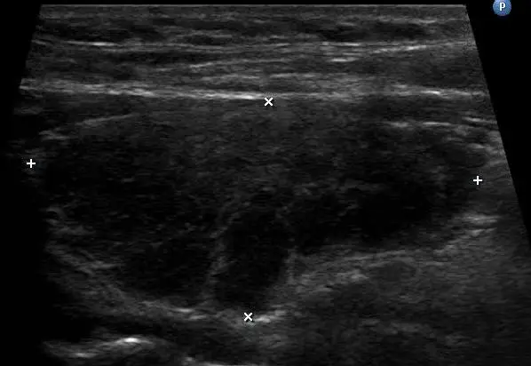

DX.9 — Hypothyroïdie
1. Définition et sémantique
Maladies endocriniennes, nutritionnelles et métaboliquesCIM-10, chap. IVChapitre des maladies des glandes hormonales, de la nutrition et du métabolisme.
- Maladies de la glande thyroïdeCe groupe comprend le goitre, la carence en iode, l'hypothyroïdie, l'hyperthyroïdie et les thyroïdites.
- Diabète sucré (E10-E14)Il regroupe les maladies où la glycémie reste élevée.
- Autres anomalies de la régulation de la glycémie et de la sécrétion pancréatique interne (E15-E16)Elles regroupent les hypoglycémies et les troubles de la sécrétion pancréatique.
- Maladies des autres glandes endocrines (E20-E35)Elles regroupent les atteintes de la parathyroïde, de l'hypophyse, des surrénales et des gonades.
- Malnutrition (E40-E46)Elle regroupe les états de dénutrition.
- Autres carences nutritionnelles (E50-E64)Elles regroupent les carences en vitamines et en oligo-éléments.
- Obésité et autres excès d'apport (E65-E68)Elles regroupent l'obésité et les excès d'apport nutritionnel.
- Troubles du métabolisme (E70-E90)Ils regroupent les anomalies du métabolisme des acides aminés, des lipides, des minéraux et d'autres substances.
Maladies de la glande thyroïdeCIM-10, E00-E07Ce groupe comprend le goitre, la carence en iode, l'hypothyroïdie, l'hyperthyroïdie et les thyroïdites.
- HypothyroïdieDéficit en hormones thyroïdiennes, quelle que soit la cause. La thyroïdite de Hashimoto relève de la rubrique E06 de la CIM-10.
- Syndrome de carence congénitale en iode (E00)Il désigne l'atteinte liée à un manque d'iode pendant la vie fœtale.
- Goitre lié à une carence en iode (E01)Il désigne l'augmentation de volume de la thyroïde due au manque d'iode.
- Carence subclinique en iode (E02)Elle désigne un manque d'iode sans signe clinique net.
- Autres goitres non toxiques (E04)Ils désignent les goitres sans excès d'hormones thyroïdiennes.
- Thyrotoxicose, hyperthyroïdie (E05)Elle désigne l'excès d'hormones thyroïdiennes.
- Thyroïdite (E06)Elle désigne l'inflammation de la thyroïde.
- Autres maladies de la thyroïde (E07)Elles regroupent les autres atteintes thyroïdiennes.
HypothyroïdieCIM-10, E03 ; CIM-11, 5A00Déficit en hormones thyroïdiennes, quelle que soit la cause. La thyroïdite de Hashimoto relève de la rubrique E06 de la CIM-10.
- Hypothyroïdie acquise de l'adulte
- Hypothyroïdie congénitale avec goitre diffus (E03.0)Elle désigne un déficit présent dès la naissance avec goitre.
- Hypothyroïdie congénitale sans goitre (E03.1)Elle désigne un déficit présent dès la naissance sans goitre.
- Hypothyroïdie médicamenteuse (E03.2)Elle désigne un déficit causé par un médicament.
- Hypothyroïdie postinfectieuse (E03.3)Elle désigne un déficit survenu après une infection.
- Atrophie de la thyroïde acquise (E03.4)Elle désigne la perte de volume de la glande après la naissance.
- Coma myxœdémateux (E03.5)Il désigne la forme extrême de décompensation de l'hypothyroïdie.
- Autres hypothyroïdies précisées (E03.8)Elles regroupent les autres causes précisées de déficit.
- Hypothyroïdie, sans précision (E03.9)Elle désigne un déficit dont la cause n'est pas précisée.
Hypothyroïdie acquise de l'adulte
- Primairela thyroïde est atteinte
- Centralel'hypophyse ou l'hypothalamus est atteint
- Périphériqueles tissus résistent à l'hormone
L'hypothyroïdie est un déficit en hormones thyroïdiennesThyroxine (T4) et triiodothyronine (T3). La thyroïde produit surtout de la T4 ; les tissus la convertissent en T3 active. qui ralentit le métabolisme1.
Elle est manifesteTSH élevée avec fT4 sous l'intervalle de référence. C'est la définition de l'hypothyroïdie primaire manifeste. si la TSH est élevée et la fT4 basse. Elle est infracliniqueTSH élevée avec fT4 dans l'intervalle de référence. Signe précoce d'insuffisance thyroïdienne. Les seuils de traitement diffèrent de la forme manifeste.1,2 si la fT4 reste normale.
Elle se distingue de l'hyperthyroïdie. Le goitre euthyroïdien est exclu : la TSH reste normale.
2. Épidémiologie (Suisse, puis Europe)
La Suisse enrichit le sel en iode depuis 1952, à 25 milligrammes par kilogramme depuis 2014, et plus de 80 % des ménages suisses utilisent du sel iodé (Bulletin suisse 2019)13. Le rapport suisse indique que la lévothyroxine coûte, pour l'hypothyroïdie infraclinique, entre 9 et 87 millions de francs sur cinq ans (2020-2024), selon la part de patients traités (rapport OFSP)5.
| Thème | Constat | Source |
|---|---|---|
| Forme manifeste | La Revue médicale suisse 2018 décrit la fréquence suisse de la forme manifeste. | 4 |
| Forme infraclinique | La fréquence suisse est traitée dans le rapport d'évaluation de l'OFSP. | 5 |
| Âge et sexe | L'âge et le sexe pèsent sur le risque, car la forme infraclinique est plus fréquente chez les femmes et après 65 ans5. | 5 |
| Risque cardiovasculaire | Il s'associe surtout à une TSH supérieure à 10 mU/L5. | 5 |
| Apport en iode | Le bulletin suisse 2019 juge l'apport suffisant chez les écoliers, mais insuffisant chez les femmes en âge de procréer, les femmes enceintes ou allaitantes et les petits enfants5. | 13 |
| Évolution | L'hypothyroïdie est insidieuse, car les symptômes apparaissent tard. | 1 |
| Enjeux | Les enjeux sont le coût et le surtraitement. | 5 |
| Groupe | UIC médiane (µg/L) | Lecture |
|---|---|---|
| Écoliers | 137 | Suffisant |
| Femmes en âge de procréer | 88 | Insuffisant |
| Femmes enceintes | 140 | Limite : la cible est de 150 µg/L5 |
3. Physiopathologie
L'axe thyréotropeL'hypothalamus libère la TRH ; l'hypophyse libère la TSH ; la thyroïde libère T4 et T3. Les hormones thyroïdiennes freinent la TRH et la TSH. Une fT4 basse fait monter la TSH. règle la production d'hormones. Dans les régions riches en iode, la cause la plus fréquente est la thyroïdite auto-immune chronique ; la carence sévère en iode reste la cause mondiale majeure.
La cascade comprend quatre étapes.
Amorce, niveau moléculaire : des anticorps anti-TPOAuto-anticorps dirigés contre la thyroperoxydase, enzyme qui iode la thyroglobuline. Ils marquent la thyroïdite auto-immune et prédisent le passage de l'hypothyroïdie infraclinique à la forme manifeste.2 et des lymphocytes T autoréactifs ciblent les antigènes thyroïdiens. Une carence en iode, un traitement ou une chirurgie peuvent aussi supprimer la synthèse.
Développement, niveau cellulaire : les lymphocytes infiltrent la glande et détruisent les thyrocytes. La synthèse de T4 et de T3 diminue. La TSH augmente pour compenser : cette phase est infraclinique.
Installation, niveau tissulaire : la glande devient atrophique, ou forme un goitre ferme par infiltrat et fibrose. La fT4 passe sous l'intervalle de référence : l'hypothyroïdie devient manifeste.
Maintien, niveau clinique : le déficit hormonal ralentit la thermogenèse et le métabolisme de base. Les glycosaminoglycanes s'accumulent dans le derme et les muscles, d'où l'infiltration myxœdémateuseŒdème dur, sans godet, de la peau et des tissus mous. Il épaissit les traits, la langue et les cordes vocales.. Les récepteurs hépatiques des LDL diminuent et le cholestérol monte. Le cœur ralentit et se remplit moins bien.
Ces mécanismes expliquent les complications : épanchements séreux, bradycardie, hyperlipidémie et coma myxœdémateux en cas de décompensation. Le pronostic dépend de la cause, de la durée du déficit et de l'observance du traitement1.
| Lésion ou perturbation | Exploration qui la montre | Thérapeutique et mécanisme |
|---|---|---|
| Destruction auto-immune des thyrocytes | Anticorps anti-TPO ; échographie hypoéchogène | LévothyroxineDCI : lévothyroxine sodique (Euthyrox®, n° Swissmedic 54949 ; Eltroxin®-LF n° 29812 ; Tirosint® n° 57455). Classe : hormone thyroïdienne de synthèse (ATC H03AA01) ; la T4 de synthèse est identique à celle de la thyroïde. Groupe : médicaments de la thyroïde (ATC H03). Chefs de file : hormones thyroïdiennes (H03A), dont la lévothyroxine traite l'hypothyroïdie ; posologie AIPS Euthyrox® : initiale 25 à 50 µg par jour, entretien 100 à 200 µg par jour7. Antithyroïdiens (H03B) : le carbimazole (Néo-Mercazole®) traite l'hyperthyroïdie ; posologie AIPS : initiale 20 à 60 mg par jour en deux à trois prises, entretien 5 à 20 mg par jour10. Indications AIPS Euthyrox® : hypothyroïdie de toute origine, hypothyroïdie congénitale, malignome thyroïdien, goitre euthyroïdien7. : remplace la T4 manquante ; l'immunité n'est pas traitée |
| Chute de T4 et de T3 | TSH élevée, fT4 basse | Lévothyroxine : restaure la T4 ; la périphérie fabrique la T3 |
| Carence en iode | UIC basse ; goitre | Apport d'iode : la glande retrouve un substrat de synthèse |
| Déficit hypophysaire ou hypothalamique | TSH basse ou normale avec fT4 basse ; IRM | Substituer les autres axes avant la lévothyroxine |
| Hypométabolisme et dyslipidémie | Cholestérol LDL, CK, sodium | Normaliser la TSH : le métabolisme et les lipides se corrigent |
| Médicament inducteur (amiodaroneDCI : amiodarone (amiodarone en comprimés, n° Swissmedic 53114). Classe : antiarythmique de classe III (ATC C01BD01) ; l'iode de la molécule provoque une hypothyroïdie ou une hyperthyroïdie7. Groupe : antiarythmiques de classes I et III (ATC C01B). Chef de file : amiodarone, qui traite les troubles du rythme supraventriculaires et ventriculaires ; posologie AIPS : attaque 600 mg par jour pendant 8 à 10 jours, entretien 100 à 400 mg par jour14., lithium, iode) | Liste des médicaments ; TSH de contrôle | Arrêter ou substituer ; lévothyroxine si le médicament reste indispensable |
4. Démarche diagnostique
La démarche suit la gravité d'abord, puis la fréquence. Le médecin exclut en premier la décompensation et les causes à traiter autrement. Il pose ensuite le diagnostic biologique.
Étape 1. Le médecin exclut d'abord les drapeaux rouges (🚩 = menace vitale ou perte de chance).
| Drapeau | Signe ou examen qui tranche | Piège | Conduite immédiate |
|---|---|---|---|
| 🚩 Coma myxœdémateuxRouge : décompensation extrême du déficit hormonal. Altération de la conscience, hypothermie, bradycardie et hypoventilation. Un froid, une infection ou un sédatif le déclenchent souvent. Elle menace la vie. | Température centrale basse, bradycardie, somnolence, hyponatrémie ; TSH très élevée | Attribuer la somnolence à l'âge ou à la dépression | Soins intensifs ; hydrocortisoneDCI : hydrocortisone (succinate sodique) (Solu-Cortef®, n° Swissmedic 23533). Classe : corticostéroïde (ATC H02AB09). Groupe : corticostéroïdes à usage systémique (ATC H02). Chefs de file : hydrocortisone, prednisone et dexaméthasone, qui traitent l'insuffisance corticosurrénalienne aiguë ; posologie AIPS Solu-Cortef® : doses initiales jusqu'à 100 mg par voie intraveineuse, en 30 secondes au minimum11. Indications AIPS : insuffisance corticosurrénalienne aiguë, états allergiques sévères11. puis lévothyroxine (11.B.1) |
| 🚩 Hypothyroïdie centrale avec insuffisance surrénalienneRouge : la TSH basse ou normale avec une fT4 basse signe une atteinte hypophysaire. La lévothyroxine seule peut déclencher une crise surrénalienne. L'AIPS impose de traiter la surrénale d'abord.7 | fT4 basse avec TSH non élevée ; céphalées, troubles visuels, hypotension | Doser seulement la TSH et conclure à la normalité | Cortisol, IRM hypophysaire, avis d'endocrinologie |
| 🚩 Cardiopathie ischémique ou rythmiqueRouge : la lévothyroxine augmente le travail du cœur. L'AIPS contre-indique le traitement en cas d'infarctus aigu et d'angine de poitrine. Un traitement trop rapide déclenche une ischémie. | Douleur thoracique, ECG anormal, insuffisance cardiaque | Débuter à pleine dose chez le patient âgé | Dose initiale de 25 µg7, ECG, avis de cardiologie |
| 🚩 Grossesse ou désir de grossesseRouge : le besoin en lévothyroxine change pendant la grossesse. L'AIPS impose un suivi par un spécialiste. Les recommandations pour adultes non enceintes ne s'appliquent pas : le BMJ 2019 exclut les femmes qui cherchent à concevoir.6,7 | Test de grossesse, TSH, fT4, anti-TPO | Appliquer les seuils de l'adulte non enceinte | Avis rapide d'endocrinologie |
| 🚩 Goitre compressif ou nodule suspectRouge : une masse cervicale ferme, rapidement croissante, avec dysphagie, dysphonie ou dyspnée évoque une compression ou un cancer. L'hypothyroïdie n'explique pas ces signes. | Palpation du cou ; échographie | Attribuer le goitre à la seule thyroïdite | Échographie, avis spécialisé |
Étape 2. En l'absence de drapeau rouge, le médecin suit ces étapes.
1. Le médecin cherche les symptômes et les médicaments qui causent le déficit (point 5).
2. Il examine le cou, la peau, le pouls et les réflexes (point 6).
3. Il dose la TSH et la fT4 sur sang veineux (point 9).
4. Si la TSH est élevée, il confirme par un second dosage après 2 à 3 mois, avec les anticorps anti-TPO2.
5. Si la fT4 est basse sans TSH élevée, il cherche une cause hypophysaire.
6. Il pose l'indication de traitement selon la TSH, l'âge et les symptômes (point 11).
5. Anamnèse ciblée et drapeaux rouges
Chaque question oriente vers la cause ou la gravité du déficit. La plupart des symptômes sont insidieux et non spécifiques1.
| Question clé | Raison physiopathologique : pourquoi elle change la décision |
|---|---|
| Depuis quand la fatigue, la frilosité et la prise de poids ont-elles débuté ? | Le déficit hormonal ralentit le métabolisme et la thermogenèseProduction de chaleur par l'organisme, stimulée par les hormones thyroïdiennes.. Un début lent sur des mois est typique. |
| Y a-t-il une constipation, une peau sèche, une chute de cheveux, une voix rauque ? | Le ralentissement digestif et l'infiltration myxœdémateuse expliquent ces signes. |
| Quels médicaments le patient prend-il : amiodaroneDCI : amiodarone (amiodarone en comprimés, n° Swissmedic 53114). Classe : antiarythmique de classe III (ATC C01BD01) ; l'iode de la molécule provoque une hypothyroïdie ou une hyperthyroïdie7. Groupe : antiarythmiques de classes I et III (ATC C01B). Chef de file : amiodarone, qui traite les troubles du rythme supraventriculaires et ventriculaires ; posologie AIPS : attaque 600 mg par jour pendant 8 à 10 jours, entretien 100 à 400 mg par jour14., lithium, immunothérapie, produits iodés ? | Ces produits bloquent la synthèse thyroïdienne16. L'arrêt suffit parfois : après l'amiodarone, l'euthyroïdie revient en 1 à 3 mois14. |
| Y a-t-il eu une chirurgie du cou, un traitement à l'iode radioactif ou une radiothérapie cervicale ? | Ces gestes suppriment du tissu thyroïdien (iode radioactifIode 131 qui détruit le tissu thyroïdien ; il traite l'hyperthyroïdie et certains cancers.)1. Le déficit est alors permanent. |
| Existe-t-il d'autres maladies auto-immunes, ou des antécédents familiaux thyroïdiens ? | La thyroïdite auto-immune s'associe à d'autres maladies auto-immunes et se transmet en famille. |
| La patiente est-elle enceinte, allaitante, ou cherche-t-elle une grossesse ? | Le besoin hormonal change et le suivi est spécialisé7 ; le BMJ 2019 exclut ces femmes de sa recommandation6. |
| Y a-t-il des céphalées, des troubles visuels, une aménorrhée ? | Ils évoquent une atteinte hypophysaire, donc une hypothyroïdie centrale. |
| Quel est le contexte alimentaire et géographique : sel iodé, régime restrictif, soja ? | L'apport d'iode conditionne la synthèse ; le soja réduit l'absorption de la lévothyroxine. |
| Le patient prend-il de la biotine ? | La biotineVitamine B8 prise en complément. À forte dose, elle fausse les dosages par immunodosage, avec des résultats faussement hauts ou bas. fausse les dosages hormonaux par immunodosage. |
Drapeaux rouges qui imposent une action immédiate.
• Une somnolence, une confusion ou une hypothermie imposent les soins intensifs (coma myxœdémateux).
• Une douleur thoracique ou une dyspnée impose une urgence cardiologique, avec ECG immédiat.
• Des céphalées avec troubles visuels imposent une imagerie hypophysaire et un avis d'endocrinologie.
• Une masse cervicale dure ou une dysphagie imposent une échographie et un avis spécialisé.
• Une grossesse impose un avis rapide d'endocrinologie.
6. Examen physique ciblé, région par région
L'examen décrit le normal avant le pathologique, du général au local. La valeur des signes cliniques est qualitative et ne remplace pas la TSH.
| Région | Normal attendu | Pathologique : signe cliquable | Technique et piège |
|---|---|---|---|
| Signes vitaux | Température proche de 37 °C ; pouls régulier ; tension normale | BradycardieFréquence cardiaque basse. Le déficit hormonal réduit la sensibilité aux catécholamines. Valeur : évocatrice, non spécifique. Piège : un bêta-bloquant la provoque aussi. ; hypertension diastoliquePression diastolique élevée. La résistance vasculaire augmente dans l'hypothyroïdie. Valeur : inconstante. Piège : un autre diagnostic d'hypertension reste possible. ; hypothermieTempérature centrale basse. Signe de décompensation. Technique : thermomètre fiable, mesure centrale. Piège : thermomètre non adapté aux températures basses. | Compter le pouls 30 secondes ; mesurer la tension aux deux bras. Piège : croire le patient sur parole. |
| Aspect général et peau | Peau souple, chaude, humide ; cheveux et sourcils fournis | Peau sèche et froidePeau rugueuse, pâle ou jaunâtre, froide au toucher. Mécanisme : vasoconstriction et baisse de la sécrétion. Valeur : fréquente. Piège : fréquente aussi chez la personne âgée en bonne santé. ; chute de la queue du sourcilRaréfaction du tiers externe des sourcils. Technique : inspecter le visage de face. Valeur : classique mais peu sensible. ; œdème sans godetŒdème dur du visage, des paupières et des jambes. Technique : presser 5 secondes avec le pouce ; l'empreinte ne persiste pas. Valeur : évoque le myxœdème. Piège : confondre avec un œdème cardiaque ou rénal, qui prend le godet. | Inspecter à la lumière du jour. Palper la peau des avant-bras. |
| Cou et thyroïde | Glande souple, non palpable ou à peine ; mobile à la déglutition | Goitre fermeGlande augmentée de volume, ferme, caoutchouteuse. Évoque la thyroïdite de Hashimoto. Technique : palper par-derrière, le patient avale de l'eau. Piège : une glande atrophique est aussi possible. ; noduleMasse palpable distincte du parenchyme. Technique : palper les deux lobes et l'isthme. Valeur : indication d'une échographie. Piège : un nodule dur et fixe évoque un cancer. | Se placer derrière le patient, cou légèrement fléchi. Chercher les adénopathies cervicales. |
| Visage et bouche | Traits fins ; langue de taille normale ; voix claire | Macroglossie et voix rauqueLangue épaissie, voix grave et lente. Mécanisme : infiltration myxœdémateuse de la langue et des cordes vocales. Valeur : évocatrice quand elle est associée à d'autres signes. ; faciès myxœdémateuxVisage bouffi, paupières gonflées, traits épaissis. Technique : inspecter le visage de face. Piège : confondre avec une cause rénale ou une rétention d'eau. | Faire parler le patient. Inspecter la langue. |
| Cœur et poumons | Bruits du cœur nets ; murmure vésiculaire symétrique | Bruits du cœur assourdisBruits du cœur lointains. Évoquent un épanchement péricardique. Technique : auscultation au repos. Piège : un thorax épais réduit aussi les bruits. ; épanchement pleuralMatité à la percussion et murmure vésiculaire diminué à la base. Technique : percuter le dos. Valeur : épanchement séreux, rarement important. | Ausculter les quatre foyers ; percuter les bases. |
| Abdomen | Souple, bruits hydro-aériques présents | Ralentissement du transitBruits hydro-aériques rares, ventre distendu. Mécanisme : motricité digestive ralentie. Valeur : orientation. Piège : un syndrome occlusif est un autre diagnostic urgent. | Ausculter avant de palper. |
| Neuromusculaire | Réflexes vifs et symétriques ; force normale | Relaxation lente des réflexesLa phase de relâchement du réflexe achilléen est lente. Technique : percuter le tendon d'Achille, patient à genoux sur une chaise, et observer le retour du pied. Valeur : signe classique, peu sensible. Piège : un hypothyroïdien âgé peut avoir des réflexes diminués pour d'autres causes. ; syndrome du canal carpienParesthésies de la main. Technique : manœuvre de Phalen, flexion forcée des poignets pendant 1 minute. Mécanisme : infiltration du canal. Piège : cause fréquente indépendante de la thyroïde. | Percuter avec le marteau à réflexes ; tester la force proximale. |
Faciès myxœdémateux : visage et mains d'une patiente avant traitement. Photographie en noir et blanc, vue de face, d'une femme atteinte de myxœdème avant traitement (collection Wellcome).

Lisez d'abord seul ce cliché (faciès myxœdémateux : visage et mains d'une patiente avant traitement) : cherchez vous-même le signe.
La copie annotée (faciès myxœdémateux : visage et mains d'une patiente avant traitement) numérote les repères décrits ci-dessous.
- Le visage est bouffi, les paupières sont gonflées et les traits sont épaissis : c'est l'infiltration myxœdémateuse.
- Le bas du visage est large et empâté : le menton et les joues perdent leur relief.
- Les doigts sont épais et boudinés : l'infiltration touche aussi les mains.
- Une bouffissure du visage existe aussi dans une cause rénale ou une rétention d'eau : la TSH tranche.
- Ce cliché ancien montre un tableau tardif : aujourd'hui, la TSH pose le diagnostic bien avant ce stade.
Ce que l'image décide. Un faciès bouffi évoque le myxœdème ; il impose le dosage de la TSH et de la fT4, qui seules confirment le déficit.
7. Approche syndromique
Quatre syndromes se retrouvent au lit du malade. Chaque syndrome comprend des signes fonctionnels, que le patient dit, et des signes physiques, que le médecin constate.
7.1 Syndrome d'hypométabolisme
| Type | Signe | Définition | Recherche (geste) | Mécanisme |
|---|---|---|---|---|
| Fonctionnel | FrilositéSensation de froid quand les autres n'ont pas froid. | Le patient se couvre plus que son entourage. | Demander s'il porte un pull en été ou s'il ferme les fenêtres. | La thermogenèse diminue. |
| Fonctionnel | AsthénieFatigue de repos disproportionnée à l'effort ; premier symptôme de l'hypothyroïdie., somnolence | Fatigue de repos non expliquée par l'effort. | Demander l'heure de réveil et les siestes. | Le métabolisme énergétique ralentit. |
| Fonctionnel | Prise de poidsGain modéré, surtout par rétention d'eau et baisse de la dépense de repos. | Gain de quelques kilos sans changement alimentaire. | Comparer les poids notés au dossier. | La dépense de repos baisse ; l'eau s'accumule dans les tissus. |
| Physique | BradycardiePouls lent. Voir point 6 pour la technique. et température basse | Signes vitaux au-dessous de la norme du patient. | Mesurer la température et compter le pouls. | Le déficit hormonal réduit la production de chaleur et la sensibilité aux catécholamines. |
7.2 Syndrome cutanéo-muqueux et infiltration myxœdémateuse
| Type | Signe | Définition | Recherche (geste) | Mécanisme |
|---|---|---|---|---|
| Fonctionnel | Peau sèche, cheveux cassants, chute de cheveux | Plainte cutanée progressive. | Demander si la peau tiraille et si les cheveux tombent par poignées. | La sécrétion cutanée baisse ; le cycle du poil se ralentit. |
| Fonctionnel | Voix rauque | Voix devenue grave ou lente. | Écouter la voix pendant la conversation. | Les cordes vocales s'infiltrent. |
| Physique | Œdème sans godetVoir point 6 pour la technique : presser 5 secondes ; l'empreinte ne reste pas. | Œdème dur ne gardant pas l'empreinte. | Presser 5 secondes la face antérieure du tibia. | Les glycosaminoglycanes retiennent l'eau. |
| Physique | Macroglossie, faciès bouffi | Langue et visage épaissis. | Inspecter la langue, qui laisse des empreintes dentaires ; observer le visage. | L'infiltration myxœdémateuse épaissit les tissus. |
7.3 Syndrome cardiovasculaire et métabolique
| Type | Signe | Définition | Recherche (geste) | Mécanisme |
|---|---|---|---|---|
| Fonctionnel | Dyspnée d'effort | Essoufflement disproportionné à l'effort. | Demander la distance de marche avant l'essoufflement. | La contractilité et le débit cardiaque baissent ; un épanchement s'ajoute. |
| Physique | Bradycardie, hypertension diastolique | Pouls lent, pression diastolique élevée. | Compter le pouls ; mesurer la tension. | La résistance vasculaire augmente. |
| Physique | Bruits du cœur assourdisBruits lointains à l'auscultation ; évoquent un épanchement péricardique. | Bruits lointains. | Ausculter les quatre foyers. | Un épanchement péricardique les étouffe. |
| Biologique | HypercholestérolémieCholestérol LDL élevé par baisse des récepteurs hépatiques des LDL., CK élevée, hyponatrémie | Anomalies biologiques associées. | Demander lipides, CK et ionogramme. | La clairance des LDL, la CK et l'excrétion d'eau libre diminuent. |
7.4 Syndrome neuro-psychique et neuromusculaire
| Type | Signe | Définition | Recherche (geste) | Mécanisme |
|---|---|---|---|---|
| Fonctionnel | Ralentissement, troubles de la mémoire, humeur dépressive | Lenteur de pensée, oublis, tristesse. | Poser deux questions de dépistage de la dépression ; tester une mémoire courte. | Le déficit hormonal ralentit le métabolisme cérébral. |
| Fonctionnel | Crampes, douleurs musculaires, paresthésies | Plaintes musculaires et nerveuses. | Demander si la main s'engourdit la nuit. | L'infiltration atteint les muscles et les nerfs. |
| Physique | Relaxation lente des réflexes ostéotendineuxVoir point 6 pour la technique : réflexe achilléen, retour lent du pied. | Phase de retour du réflexe prolongée. | Percuter le tendon d'Achille et observer le retour. | La contraction musculaire se relâche plus lentement. |
| Physique | Test de PhalenFlexion forcée des poignets pendant 1 minute ; le test est positif si les paresthésies apparaissent. positif | Paresthésies déclenchées par la flexion forcée. | Maintenir les poignets en flexion 1 minute. | Le nerf médian est comprimé par l'infiltration. |
8. Diagnostic positif et critères
Le diagnostic est biologique. La revue de Chaker 2022 et la recommandation de l'ETA 2013 définissent les seuils1,2. L'ATA 2014 fixe les standards du traitement3.
| Forme | TSH | fT4 | Remarque |
|---|---|---|---|
| Manifeste, primaire | Élevée | Basse | Traitement indiqué1 |
| Infraclinique, légère | 4,0 à 10,0 mU/L1 | Normale | Répéter après 2 à 3 mois2 |
| Infraclinique, marquée | Supérieure à 10 mU/L2 | Normale | Traitement si moins de 65 à 70 ans2 |
| Centrale | Basse ou normale | Basse | Chercher une cause hypophysaire |
Ce qui suffit et ce qui ne suffit pas.
| Élément évalué | Suffisance pour décider | Commentaire |
|---|---|---|
| TSH élevée et fT4 basse | Oui | Définit l'hypothyroïdie primaire manifeste. |
| TSH élevée isolée, fT4 normale | Non | Il faut répéter après 2 à 3 mois avec les anti-TPO2. |
| Symptômes seuls | Non | Ils sont non spécifiques ; la biologie tranche. |
| Anticorps anti-TPO positifs seuls | Non | Ils signent l'auto-immunité, non le déficit. |
| TSH légèrement élevée chez le sujet âgé | Non | La TSH augmente naturellement avec l'âge ; l'ETA conseille des normes adaptées à l'âge. |
| Résultat discordant avec la clinique | Non | Penser à une interférence de la biotine avant de conclure7. |
9. Examens complémentaires
9.a Gold standard
Il n'existe pas de gold standard unique. Le diagnostic repose sur le couple TSH et fT4, interprété avec la clinique1.
9.b Examens de 1re intention1
Le médecin prescrit une TSH et une fT4 sur sang veineux. Il informe le laboratoire en cas de prise de biotine. Le dosage suit l'ordre : TSH d'abord, fT4 ensuite si la TSH est anormale.
| Résultat | Signification | Conduite |
|---|---|---|
| TSH haute, fT4 basse | Hypothyroïdie primaire manifeste | Lévothyroxine ; chercher la cause (anti-TPO, médicaments) |
| TSH haute (4,0 à 10,0), fT4 normale1 | Forme infraclinique légère | Répéter après 2 à 3 mois avec anti-TPO2 |
| TSH supérieure à 10, fT4 normale2 | Forme infraclinique marquée | Traiter si moins de 65 à 70 ans2 |
| TSH basse ou normale, fT4 basse | Atteinte centrale ou maladie non thyroïdienne | Cortisol, IRM hypophysaire, avis d'endocrinologie |
| TSH normale, fT4 normale | Pas d'hypothyroïdie | Chercher une autre cause de fatigue |
| Résultat discordant avec la clinique | Interférence ou prise irrégulière | Refaire le dosage ; vérifier la biotine et l'observance7 |
9.c Alternatives
Les anticorps anti-TPOLe point 3 les décrit. Ils confirment l'origine auto-immune et prédisent l'évolution de la forme infraclinique.2 se demandent en cas de TSH élevée. L'échographie thyroïdienne se demande en cas de goitre ou de nodule. Elle ne dépend d'aucun produit iodé et reste possible pendant la grossesse. Les tests de suppression avec substances radioactives sont proscrits pendant la grossesse.
Si le patient prend de la biotine, le laboratoire utilise, quand ils sont disponibles, des tests sans interférence avec la biotine7.
Échographie thyroïdienne dans la thyroïdite de Hashimoto (lobe droit, coupe longitudinale). Échographie cervicale en mode B, coupe longitudinale du lobe droit ; la patiente a une thyroïdite de Hashimoto connue.

Lisez d'abord seul ce cliché (échographie thyroïdienne dans la thyroïdite de Hashimoto (lobe droit, coupe longitudinale)) : cherchez vous-même le signe.
La copie annotée (échographie thyroïdienne dans la thyroïdite de Hashimoto (lobe droit, coupe longitudinale)) numérote les repères décrits ci-dessous.
- La glande est diffusément hypoéchogène : son parenchyme est plus sombre que celui d'un lobe normal, signe d'une infiltration lymphocytaire.
- La trame est hétérogène, avec de fines travées échogènes : elles correspondent à la fibrose qui accompagne l'infiltrat.
- Les croix mesurent le lobe : l'échographie montre si la glande est augmentée de volume ou atrophique, ce que la TSH ne montre pas.
- Une échographie normale n'exclut pas une thyroïdite auto-immune : les anticorps anti-TPO restent le test de l'origine auto-immune.
- L'image ne prouve pas l'hypofonction : seul le couple TSH et fT4 pose le diagnostic d'hypothyroïdie.
Ce que l'image décide. L'échographie se demande en cas de goitre ou de nodule ; elle ne remplace ni la TSH ni la fT4, qui posent le diagnostic.
9.d Examens de 2e intention2
L'IRM hypophysaire et le dosage du cortisol se demandent si la fT4 est basse sans TSH élevée. Le bilan associé comprend les lipides, la CK, le sodium et l'hémogramme. Le test de suppression thyroïdienne par lévothyroxine reste une indication AIPS ; il exige d'exclure d'abord une autonomie fonctionnelle de la thyroïde7.
10. Arbre décisionnel
L'arbre exclut d'abord les graves, puis sépare les formes selon la TSH et la fT4.
• Nœud 1 : urgence. Une hypothermie, une somnolence ou une bradycardie imposent les soins intensifs, puis l'hydrocortisone et la lévothyroxine (11.B.1)1. Sinon, il faut passer au nœud 21.
• Nœud 2 : bilan de base. Le médecin mesure la TSH1. Si la TSH est normale, l'hypothyroïdie primaire est exclue et il cherche une autre cause de fatigue. Si la TSH est élevée, il passe au nœud 31. Si la TSH est normale avec une suspicion centrale, il dose la fT4 et passe au nœud 51.
• Nœud 3 : fT4. Si la fT4 est basse, l'hypothyroïdie est manifeste et il passe au nœud 41. Si la fT4 est normale, la forme est infraclinique et il passe au nœud 61.
• Nœud 4 : forme manifeste. Le médecin cherche la cause (anti-TPO, médicaments, chirurgie)1. Il traite ensuite par lévothyroxine, avec une dose initiale de 25 µg si le patient est âgé ou cardiaque7 (11.B.2).
• Nœud 5 : fT4 basse sans TSH élevée. Si une cause hypophysaire est suspectée, le médecin demande cortisol, IRM et avis d'endocrinologie avant la lévothyroxine7.
• Nœud 6 : forme infraclinique. Si la TSH dépasse 10 et que l'âge est inférieur à 65 à 70 ans, le médecin traite2. Si la TSH est de 4 à 10 sans grossesse, il répète le dosage après 2 à 3 mois et ne traite pas d'emblée26. Si la patiente est enceinte ou désire une grossesse, il traite selon l'avis d'endocrinologie.
11. Prise en charge selon les recommandations suisses
11.A But thérapeutique
Le traitement normalise la TSH et fait disparaître les symptômes. Pour la plupart des adultes, la cible est une TSH stable dans la moitié basse de l'intervalle de référence, soit 0,4 à 2,5 mU/L2. Le médecin contrôle la TSH 2 mois après le début, puis au moins chaque année2. Le traitement dure le plus souvent toute la vie7.
11.B Moyens
11.B.1 Urgence : coma myxœdémateux (conduite chronologique)1
Cette urgence se traite en soins intensifs. La dose intraveineuse de lévothyroxine suit le protocole hospitalier et se réduit chez le patient âgé ou cardiaque, parce que la correction trop rapide expose à l'arythmie et à l'ischémie.
1. À T0, le médecin appelle le médecin de garde et transfère le patient aux soins intensifs. Il prélève TSH, fT4 et cortisol.
2. Le médecin surveille la température, le pouls, la tension, la saturation et le sodium, et il réchauffe passivement le patient.
3. Avant ou avec la lévothyroxine, le médecin administre l'hydrocortisone (Solu-Cortef® : doses initiales jusqu'à 100 mg intraveineux en 30 secondes au minimum)11. Le déficit surrénalien associé se démasque quand le métabolisme accélère7.
4. Le médecin administre la lévothyroxine intraveineuse en soins intensifs, selon le protocole hospitalier.
5. Le médecin cherche le facteur déclenchant (infection, froid, sédatif) et le traite.
11.B.2 Hors urgence : forme manifeste (traitement dans l'ordre)7
1. Mesures générales. Le médecin explique la nature chronique du déficit et la nécessité d'un traitement à vie. Il cherche et corrige la cause : médicament, iode, chirurgie. Il exclut d'abord les contre-indications et les maladies cardiaques non traitées. Chez le patient âgé ou cardiaque, il demande un ECG.
2. Traitement pharmacologique. La lévothyroxine reste le traitement de référence3. Le médecin prescrit Euthyrox®, une prise matinale à jeun, une demi-heure au moins avant le petit-déjeuner.
| Situation | Dose | Durée |
|---|---|---|
| Adulte, hypothyroïdie : dose initiale | 25 à 50 µg par jour, puis +25 à 50 µg toutes les 2 à 4 semaines7 | Jusqu'à la dose d'entretien |
| Adulte : dose d'entretien | 100 à 200 µg par jour7 | Le plus souvent à vie7 |
| Âgé, cardiaque, hypothyroïdie sévère ou ancienne | Dose initiale 25 µg ; augmentation prudente, intervalles plus longs7 | Contrôle fréquent de la TSH |
| Enfant de 0 à 6 mois | 25 à 75 µg par jour (10 µg/kg)7 | Intervalles de 2 à 4 semaines7 |
| Enfant de 6 à 12 mois | 50 à 75 µg par jour (8 µg/kg)7 | Idem |
| Enfant de 1 à 5 ans | 75 à 100 µg par jour (5 à 6 µg/kg)7 | Idem |
| Enfant de 6 à 12 ans | 100 à 150 µg par jour (4 à 5 µg/kg)7 | Idem |
| Dès 12 ans | Même posologie que l'adulte7 | Idem |
| Spécialité | Dose | Voie | Durée |
|---|---|---|---|
| Euthyrox®, n° Swissmedic 54949 | Initiale 25 à 50 µg par jour ; entretien 100 à 200 µg par jour7 | Orale, une prise le matin à jeun7 | Le plus souvent à vie7 |
| Eltroxin®-LF, n° Swissmedic 29812 | Initiale 0,05 à 0,1 mg par jour ; entretien 0,1 à 0,2 mg par jour9 | Orale, une prise le matin, de préférence 30 minutes avant le petit-déjeuner9 | À vie en cas d'hypothyroïdie9 |
| Tirosint®, capsules molles, n° Swissmedic 57455 | Initiale 25 à 50 µg par jour ; entretien 100 à 200 µg par jour8 | Orale, une prise le matin à jeun ; capsules non appropriées chez le nourrisson de moins d'un an8 | Généralement à vie8 |
| Solu-Cortef®, n° Swissmedic 23533 (urgence) | Doses initiales jusqu'à 100 mg11 | Intraveineuse, en 30 secondes au minimum11 | Selon l'état du patient ; doses suivantes toutes les 2, 4 ou 6 heures11 |
Les Eltroxin®-LF et les Tirosint® sont d'autres spécialités de la même molécule8,9.
Pharmacocinétique : à jeun, l'intestin résorbe environ 80 % de la dose ; un repas simultané réduit l'absorption jusqu'à 20 %7. La demi-vie atteint environ 7 jours, et 9 à 10 jours en cas d'hypothyroïdie : l'équilibre exige plusieurs semaines, d'où le contrôle de la TSH à distance7. L'élimination est surtout fécale, sans élimination rénale7.
Interactions majeures de la lévothyroxine (AIPS)
Prendre la lévothyroxine 4 à 5 heures avant les résines échangeuses d'ions. La prendre au moins 2 heures avant les sels d'aluminium, de fer et de calcium. Les IPP, le soja et l'orlistat réduisent l'absorption. Les inducteurs enzymatiques (carbamazépine, rifampicine, millepertuis) augmentent la clairance. Les œstrogènes augmentent le besoin en lévothyroxine. La lévothyroxine renforce l'effet des anticoagulants oraux : contrôler la coagulation. Elle réduit l'effet des antidiabétiques : contrôler la glycémie. L'amiodarone peut provoquer une hypothyroïdie comme une hyperthyroïdie. Le lithium inhibe la libération de thyroxine.7Effets indésirables, contre-indications, surdosage (AIPS)
Un surdosage ou une augmentation trop rapide donne les symptômes de l'hyperthyroïdie : tachycardie, arythmie, tremblement, insomnie, diarrhée, perte de poids, hyperhidrose. Le patient doit signaler ces symptômes ; le médecin réduit la dose ou interrompt la prise quelques jours. Contre-indications : insuffisance cardiaque avec tachycardie, myocardite ou infarctus aigus, angine de poitrine, troubles hypophysaire ou surrénalien non traités, hyperthyroïdie. Le traitement n'a aucune indication de perte de poids. Une surdose massive impose un traitement symptomatique ; les bêtabloquants soulagent la tachycardie.73. Hypothyroïdie infraclinique. La décision dépend de la TSH et de l'âge. Si la TSH dépasse 10 mU/L chez un patient de moins de 65 à 70 ans, l'ETA 2013 recommande un traitement, même sans symptôme2. En revanche, la recommandation du BMJ 2019 déconseille fortement le traitement de la forme infraclinique chez l'adulte6. Elle l'admet en cas de grossesse ou de projet de grossesse, si la TSH dépasse 20 mU/L ou si les symptômes sont sévères6. Après 80 à 85 ans, une TSH de 10 mU/L ou moins se surveille sans traitement2. L'essai TRUST ne montre aucun bénéfice chez les patients de 65 ans et plus4. Le rapport suisse indique que la lévothyroxine abaisse la TSH sans bénéfice clair sur les symptômes5.
4. Association lévothyroxine et liothyronine. L'ATA 2014 maintient la lévothyroxine seule comme référence3. Un consensus ATA-ETA 2021 juge que l'équilibre justifie de nouveaux essais, sans changement de pratique12. La liothyronine reste exclue de la routine.
5. Mesures non pharmacologiques. Le patient prend la lévothyroxine à heure fixe, à jeun, loin du calcium, du fer et du soja. Il évite les compléments iodés sans avis. Il signale la biotine au laboratoire. Une alimentation iodée suffisante suffit à couvrir le besoin13.
6. Dimension sociale et professionnelle. L'arrêt de travail dépend des symptômes et de la cause. L'AIPS ne prévoit aucun effet de la lévothyroxine sur la conduite7. La somnolence non traitée la limite.
11.B.3 Situations spéciales
| Situation | Conduite selon l'AIPS |
|---|---|
| Grossesse | Ne jamais interrompre. Un besoin plus élevé est possible (hausse de la TBG). Après l'accouchement, revenir à la dose d'avant la grossesse et doser la TSH après 6 à 8 semaines7. Suivi par un spécialiste. |
| Allaitement | Compatible : la lévothyroxine passe en quantité très faible dans le lait7. |
| Sujet âgé | Dose initiale de 25 µg, augmentation lente, contrôles fréquents7. La TSH est naturellement plus élevée. |
| Enfant | Dose par kg selon l'âge. Hypothyroïdie congénitale : dose la plus élevée tolérée ; traitement précoce essentiel. |
| Insuffisance hépatique ou rénale | Aucune étude : aucune recommandation de dose. Tenir compte d'une liaison protéique modifiée. |
| Cardiopathie ou diabète | Contrôle fréquent de la TSH ; contrôler la glycémie au début du traitement. |
11.B.4 Sortie après un coma myxœdémateux
Le patient quitte l'hôpital quand chaque critère est rempli. L'état clinique est stable : conscience normale ; température, pouls et tension stables ; sodium corrigé. Le traitement est assuré : facteur déclenchant traité ; lévothyroxine orale établie ; déficit surrénalien exclu ou substitué. Le suivi est programmé : contrôle de TSH et de fT4 programmé. Ces critères relèvent du raisonnement clinique.
11.C Surveillance
| Quoi | Quand | Seuil d'alerte |
|---|---|---|
| TSH | 2 mois après le début ou après chaque changement de dose2 | TSH hors cible : ajuster par paliers de 25 à 50 µg7 |
| TSH de suivi | Au moins chaque année | Tout nouveau symptôme |
| Signes de surdosage | À chaque consultation | Tachycardie, arythmie, tremblement : réduire ou interrompre7 |
| Forme infraclinique traitée pour symptômes | 3 à 4 mois après la TSH normale2 | Aucune amélioration : arrêter le traitement |
| Postménopause | Contrôle étroit | Risque d'ostéoporose en cas de surdosage |
11.D Pronostic et recherche
Le traitement vise la normalisation de la TSH. Après normalisation, des plaintes persistantes et une qualité de vie diminuée subsistent chez une part des patients1. L'hypothyroïdie après amiodarone se corrige 1 à 3 mois après l'arrêt ; en cas d'indication vitale, le médecin poursuit l'amiodarone et associe la lévothyroxine, guidée par la TSH14. La recherche porte sur les seuils de traitement, la grossesse et l'association lévothyroxine-liothyronine1,12.
12. Prévention
La prévention vise la carence en iode, les médicaments inducteurs et la détection précoce. Le risque épidémiologique du point 2 fixe les cibles.
| Niveau | Gestes concrets | Population, seuil, source |
|---|---|---|
| Primaire | Utiliser le sel iodé à la maison ; demander à l'industrie alimentaire d'employer du sel iodé. | Suisse : sel enrichi à 25 milligrammes par kilogramme, plus de 80 % des ménages ; groupes à risque : femmes enceintes ou allaitantes, petits enfants13 |
| Secondaire | Doser la TSH et la fT4 avant un traitement par lithium15 ; contrôler régulièrement la TSH sous amiodarone14 ; doser la TSH 6 à 8 semaines après l'accouchement7. | Lithiofor® et amiodarone ; patientes enceintes traitées14,15,7 |
| Tertiaire | Éviter la décompensation : observance quotidienne, contrôles de TSH ; éviter les surdosages qui provoquent arythmie et ostéoporose. | Tous les patients traités7 |
13. Points clés
- L'hypothyroïdie primaire manifeste associe une TSH élevée et une fT4 basse1.
- Une TSH élevée isolée se confirme après 2 à 3 mois avec les anticorps anti-TPO avant tout traitement2.
- Avec une TSH supérieure à 10 mU/L, le médecin traite avant 65 à 70 ans2.
- Le médecin prescrit la lévothyroxine le matin à jeun, de 25 à 50 µg au début, de 100 à 200 µg à l'entretien7.
- Il débute à 25 µg chez le patient âgé ou cardiaque et il traite les troubles surrénaliens d'abord7.
- Devant une hypothermie avec somnolence, il pose le diagnostic de coma myxœdémateux et transfère le patient aux soins intensifs.
14. Pièges et questions fréquentes à l'examen fédéral suisse
Chaque ligne du tableau pose une question d'examen, donne la réponse attendue et en explique la raison.
| Question | Réponse | Raison |
|---|---|---|
| Quelle est la définition biologique de l'hypothyroïdie primaire manifeste ? | TSH élevée avec fT4 sous l'intervalle de référence1. | La fT4 basse prouve que la thyroïde ne compense plus, malgré la hausse de la TSH1. |
| Quelle est la définition de la forme infraclinique ? | TSH élevée avec fT4 normale1. | La TSH monte d'abord pour compenser : la fT4 reste normale tant que la compensation tient1. |
| Faut-il traiter une TSH de 6 mU/L avec une fT4 normale chez un adulte de 40 ans ? | Non : on répète le dosage après 2 à 3 mois avec les anti-TPO2. | Le rapport suisse ne montre aucun bénéfice clair sur les symptômes5 ; le BMJ 2019 déconseille fortement le traitement, sauf grossesse ou symptômes sévères6. |
| Quel seuil de TSH impose le traitement chez le patient de moins de 65 à 70 ans ? | Plus de 10 mU/L, même sans symptôme2. | Le risque cardiovasculaire s'associe surtout à une TSH supérieure à 10 mU/L5. |
| Un homme de 82 ans a une TSH de 7 mU/L : le médecin traite-t-il ? | Non : on surveille sans traiter2. | La TSH augmente naturellement avec l'âge2, et l'essai TRUST ne montre aucun bénéfice dès 65 ans4. |
| Quelle dose initiale de lévothyroxine chez l'adulte et chez le patient âgé ou cardiaque ? | 25 à 50 µg par jour chez l'adulte ; 25 µg chez le patient âgé ou cardiaque (Euthyrox®)7. | Une dose trop forte ou trop vite augmentée provoque des douleurs angineuses sur ischémie latente9. |
| Quelle est la dose d'entretien usuelle ? | 100 à 200 µg par jour, le matin à jeun, au moins une demi-heure avant le petit-déjeuner7. | Un repas simultané réduit l'absorption jusqu'à 20 %7. |
| Quand contrôler la TSH après un changement de dose ? | Après 2 mois, puis au moins chaque année2. | La demi-vie atteint environ 7 jours, et 9 à 10 jours en cas d'hypothyroïdie : l'équilibre exige plusieurs semaines7. |
| Quel piège les sels de fer et de calcium tendent-ils ? | Ils réduisent l'absorption ; la lévothyroxine se prend au moins 2 heures avant7. | L'AIPS décrit une résorption diminuée avec les sels d'aluminium, de fer et de calcium7. |
| Que faire de la lévothyroxine pendant la grossesse ? | Ne jamais l'interrompre ; la dose peut augmenter ; revenir à la dose d'avant après l'accouchement7. | Le besoin augmente avec la hausse de la TBG, protéine qui fixe la thyroxine7. |
| Que donne-t-on en premier dans le coma myxœdémateux : lévothyroxine ou hydrocortisone ? | L'hydrocortisone avant ou avec la lévothyroxine7,11. | Le déficit surrénalien associé se démasque quand le métabolisme accélère7. |
| Quelle est la cause la plus fréquente d'hypothyroïdie dans les régions riches en iode ? | La thyroïdite auto-immune chronique1. | La carence sévère en iode reste la cause mondiale majeure, mais l'iode abonde dans ces régions1. |
| La lévothyroxine sert-elle à maigrir chez un euthyroïdien ? | Non : l'AIPS l'interdit7. | Un surdosage abusif volontaire peut menacer le pronostic vital7. |
Sources bibliographiques
- [S1] Chaker L, Razvi S, Bensenor IM, Azizi F, Pearce EN, Peeters RP. Hypothyroidism. Nat Rev Dis Primers 2022;8:30. PMID 35589725. DOI 10.1038/s41572-022-00357-7 — consulté le 27.10.2026 (résumé lu via PubMed).
- [S2] Pearce SHS, Brabant G, Duntas LH, Monzani F, Peeters RP, Razvi S, Wemeau JL. 2013 ETA Guideline: Management of Subclinical Hypothyroidism. Eur Thyroid J 2013;2:215-228. PMID 24783053. DOI 10.1159/000356507 — consulté le 27.10.2026 (résumé lu via PubMed).
- [S3] Jonklaas J, Bianco AC, Bauer AJ, et al. Guidelines for the treatment of hypothyroidism (American Thyroid Association). Thyroid 2014;24:1670-1751. PMID 25266247. DOI 10.1089/thy.2014.0028 — consulté le 27.10.2026 (résumé lu via PubMed).
- [S4] Collet TH, Sykiotis GP, Aubert CE, et al. Hypothyroïdie infraclinique : faut-il encore traiter les personnes âgées ? Rev Med Suisse 2018;14:470-474. DOI 10.53738/REVMED.2018.14.596.0470. https://archive-ouverte.unige.ch/unige:165079 — consulté le 27.10.2026 (résumé lu).
- [S5] Zaium R, Thielen F, Klein P, Versteegh M, Oordt A, van Kessel F. Levothyroxine for patients diagnosed with subclinical hypothyroidism (rapport d'évaluation des technologies de la santé pour l'OFSP). INAHTA, enregistrement 32018001648. https://database.inahta.org/article/20158 — consulté le 27.10.2026 (résumé lu).
- [S6] Bekkering GE, Agoritsas T, Lytvyn L, et al. Thyroid hormones treatment for subclinical hypothyroidism: a clinical practice guideline. BMJ 2019;365:l2006. PMID 31088853. DOI 10.1136/bmj.l2006 — consulté le 27.10.2026 (résumé lu via PubMed).
- [S7] AIPS, Euthyrox®, Merck (Suisse) SA, n° Swissmedic 54949, information professionnelle de février 2023. https://files.refdata.ch/simis-public-prod/MedicinalDocuments/f5352e0e4d9b44c1a66a6f1e69061d8d-fr.html — consulté le 27.10.2026.
- [S8] AIPS, Tirosint®, n° Swissmedic 57455 — consulté le 27.10.2026.
- [S9] AIPS, Eltroxin®-LF, n° Swissmedic 29812 — consulté le 27.10.2026.
- [S10] AIPS, Néo-Mercazole®, n° Swissmedic 21037 — consulté le 27.10.2026.
- [S11] AIPS, Solu-Cortef®, n° Swissmedic 23533 — consulté le 27.10.2026.
- [S12] Jonklaas J, Bianco AC, Cappola AR, et al. Evidence-Based Use of Levothyroxine/Liothyronine Combinations in Treating Hypothyroidism: A Consensus Document. Thyroid 2021;31:156-182. PMID 33276704. DOI 10.1089/thy.2020.0720 — consulté le 27.10.2026 (résumé lu via PubMed).
- [S13] Andersson M, Herter-Aeberli I. Jodstatus in der Schweizer Bevölkerung. Schweizer Ernährungsbulletin 2019, BLV et Société suisse de nutrition. https://www.blv.admin.ch/dam/de/sd-web/fby-9udtyxTW/jodversorgung-schweizerbevoelkerung-de.pdf — consulté le 27.10.2026.
- [S14] AIPS, amiodarone en comprimés, n° Swissmedic 53114 — consulté le 27.10.2026.
- [S15] AIPS, Lithiofor®, n° Swissmedic 38061 — consulté le 27.10.2026.
- [S16] Bednarczuk T, Brix TH, Schima W, Zettinig G, Kahaly GJ. 2021 European Thyroid Association Guidelines for the Management of Iodine-Based Contrast Media-Induced Thyroid Dysfunction. Eur Thyroid J 2021;10:269-284. PMID 34395299. DOI 10.1159/000517175 — consulté le 27.10.2026 (résumé lu via PubMed).
- [S17] Korevaar TIM, Leung AM, Alexander EK, et al. American Thyroid Association 2026 Guidelines for Thyroid Disease in Preconception, Pregnancy, and Postpartum. Thyroid 2026;36:481-544. PMID 42219800. DOI 10.1177/10507256261445624 — consulté le 27.10.2026 (résumé lu via PubMed).